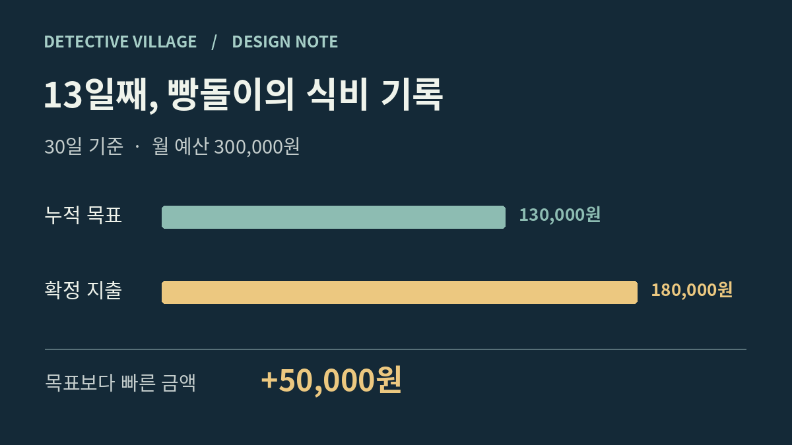

Detective Village
실제 소비 데이터를 바탕으로 2.5D 마을 주민들의 외형과 일상이 변화하고, 탐정이 지출·예산을 관리하는 게임형 Android 가계부.
기획·설계 | 이민재 개인 프로젝트
거래 기록을 다시 열어 보게 만드는 가계부
- 첫 확정 지출
- 식비·배달·카페
- 시민 1명 해금
식비를 처음 기록하면 빵돌이가 마을에 등장합니다. 다음 방문에는 같은 시민이 그달의 소비 속도와 현재 시각에 맞춰 다른 모습을 보이도록 설계했습니다.
13일차 식비가 마을에 반영되는 방식

식비 예산 30만 원인 30일짜리 달을 예로 들면, 13일차 목표는 13만 원입니다. 누적 지출이 18만 원이면 목표보다 5만 원 빠르고 월 잔액은 12만 원입니다. 일시적인 외형은 이 편차를, 다음 달에도 이어지는 기본 외형은 월말 추세를 반영할 예정입니다.
금융 원장, 시민 상태, 게임 기록을 분리합니다
- FinanceTruth
- CitizenState
- GameProgress
도입 예정인 Kotlin·Room이 확정 거래와 예산을 관리합니다. Godot 4·GDScript는 JSON 브리지로 집계를 읽어 시민의 활동과 외형을 갱신합니다. 미니게임 보상은 별도로 저장하며 실제 지출액에 영향을 주지 않습니다.
다시 열어도 이어지는 시민의 하루
- 마지막 활동 저장
- 경과 시간 계산
- 현재 일과 복원
식비·배달·카페 첫 거래로 시민을 해금하고, 재접속하면 저장된 시각과 시드로 현재 일과를 복원할 예정입니다. 첫 탐정 사건은 식비 속도 초과로 잡았습니다. 미니게임 점수와 히든 시민을 연결하고, 결제 알림은 동의한 앱의 템플릿 1종부터 검증합니다.
4주 동안 확인할 네 가지 장면
- 거래·마을
- 사건·미니게임
- 실기기 검증
11/23–11/29 수동 거래와 첫 해금 · 11/30–12/06 마을과 48시간 복원 · 12/07–12/13 사건과 미니게임 · 12/14–12/20 실기기 통합과 기록. 11/19 기준 기획·설계 단계이며 앱 구현과 실기기 테스트는 착수 전입니다.
같은 입력으로 같은 시민 상태를 재현할 수 있을까?
- 합성 거래 입력
- 같은 시드로 재생
- 결과 대조
GPT·Claude의 구현과 리뷰를 이슈·PR 단위로 나눌 예정입니다. 합성 거래만 읽는 로컬 MCP와 금융 검토·시간 복원 Skills를 설계하고, 같은 시드의 48시간 재생 결과를 비교할 계획입니다.